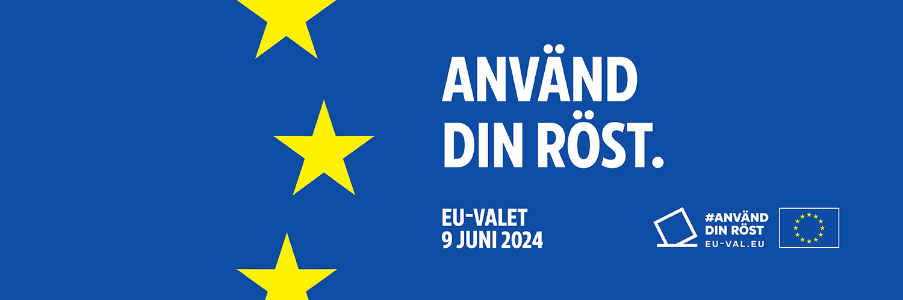

Hur planerar vi för evigheten?  Hur planerar vi för evigheten? är vår valfråga inför EU-valet 2024. Kom ihåg att rösta i EU-valet den 9 juni. Monisterna Vår ideologi: Superdeterminism Vår grundpolitik: Åtta delar för ett harmoniserande samhälle. Litteratur: Fri vilja och mänsklig utveckling Vi stöttar: Sverigekortet - Kollektivtrafik i hela landet för max 10 kronor om dagen. Initiativ som främjar cykel- och kollektivtrafik lyfter vi fram och stöttar. Gärna där cykel- och kollektivtrafiklösningar harmoniserar. Se Köpenhamn som ett gott exempel där cyklar är en naturlig del i tågvagnarna. Kontakt Kansli: Konsthallstorget i Malmö Epost: sverige@gmail.com Github: github.com/antics/monisterna